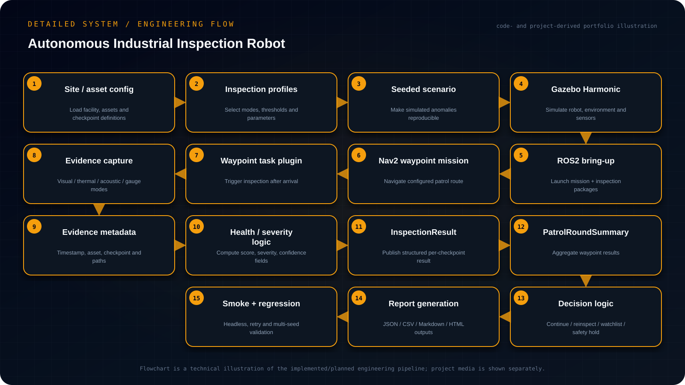

AI-GENERATED VISUALIZATION • HD
AI-GENERATED VISUALIZATION • HDIndependent Engineering Project · Public release Sep 2026
Autonomous Industrial Inspection Robot
Built a deterministic ROS 2 inspection patrol with Nav2 waypoint execution, custom inspection messages, evidence capture, follow-up logic and regression tooling.
Objective
Build a deterministic ROS2 industrial inspection workflow that patrols configured industrial assets, executes multimodal inspection-at-waypoint tasks, preserves auditable evidence, aggregates findings and makes explicit follow-up decisions.
- Represent sites, assets, checkpoints and inspection profiles in configuration rather than hard-coded mission logic.
- Use Nav2 waypoint execution with a custom inspection task plugin so navigation and inspection remain composable.
- Capture visual/thermal/acoustic/gauge-style evidence and publish structured InspectionResult messages.
- Aggregate a patrol round into auditable reports and deterministic continue/reinspect/watchlist/safety-hold decisions.
Engineering Challenge
Industrial patrol automation needs more than successful navigation. Every checkpoint must preserve what was inspected, the evidence that was captured, how an anomaly was classified and what the mission should do next when captures or inspections fail.
Implementation
Implemented ROS 2 Jazzy packages for an industrial inspection mission around a TurtleBot 4 simulation. The repository defines custom InspectionResult and PatrolRoundSummary messages, configuration-driven sites/assets/checkpoints and inspection profiles, a Nav2 waypoint task-executor plugin, and synthetic visual, thermal, acoustic and gauge-style inspection modes. The mission produces raw and annotated evidence together with health score, severity, confidence and diagnostic fields.
System Architecture
Site / asset / checkpoint configuration → Gazebo Harmonic + ROS 2 → Nav2 waypoint navigation → inspection-at-waypoint plugin → evidence + InspectionResult messages → mission aggregation → JSON / CSV / Markdown / HTML reports → continue / targeted follow-up / watchlist / safety hold.
Detailed Engineering Flow
Project-specific architecture and execution flow reconstructed from the implementation, project files and documented engineering workflow.

Validation & Test Strategy
The repository includes clean colcon build/test instructions, a headless smoke test, runtime cleanup and retry wrappers, a full benchmark path and multi-seed regression tooling. Seeded scenarios make failures reproducible; visual verification uses Gazebo and RViz to inspect maps, transforms, plans and robot state.
Engineering Decisions & Boundaries
The design favors deterministic, auditable behavior over opaque autonomy. Scenario seeds, evidence paths, severity rules, retry limits and mission decisions are explicit and configurable. The repository also clearly limits the work to simulation and documents the additional safety integration required before physical deployment.
Project Access
Public repository with implementation and documentation.
OPEN GITHUB REPOSITORY